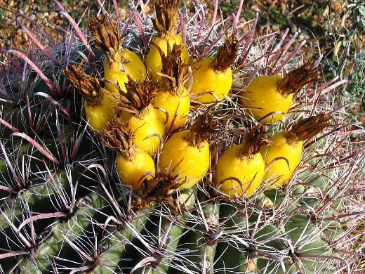

Barrel cactus fruit
Barrel cactus fruit is a wild fruit you can forage from September to February in Southwest. Squat barrel-shaped desert cactus with hooked spines; a crown of yellow, pineapple-like fruit that stays on for months.

When is barrel cactus fruit in season in the United States?
Barrel cactus fruit is usually in season September to February. Timing shifts with weather, latitude and altitude.
Where does barrel cactus fruit grow in the United States?
Barrel cactus fruit grows in Arizona, Nevada, New Mexico, Texas, Utah. Regions: Southwest.
How do you recognise barrel cactus fruit?
Squat barrel-shaped desert cactus with hooked spines; a crown of yellow, pineapple-like fruit that stays on for months.
How do you harvest barrel cactus fruit?
Pick only fully ripe fruit that comes away easily, into a shallow container so it doesn't crush. Leave plenty on the plant for birds and wildlife.
How do you eat barrel cactus fruit?
Fruit sliced raw or cooked; tart, lemony flesh. Seeds toasted.
How do you store barrel cactus fruit?
Dry seeds.
What is barrel cactus fruit good for?
Vitamin C.